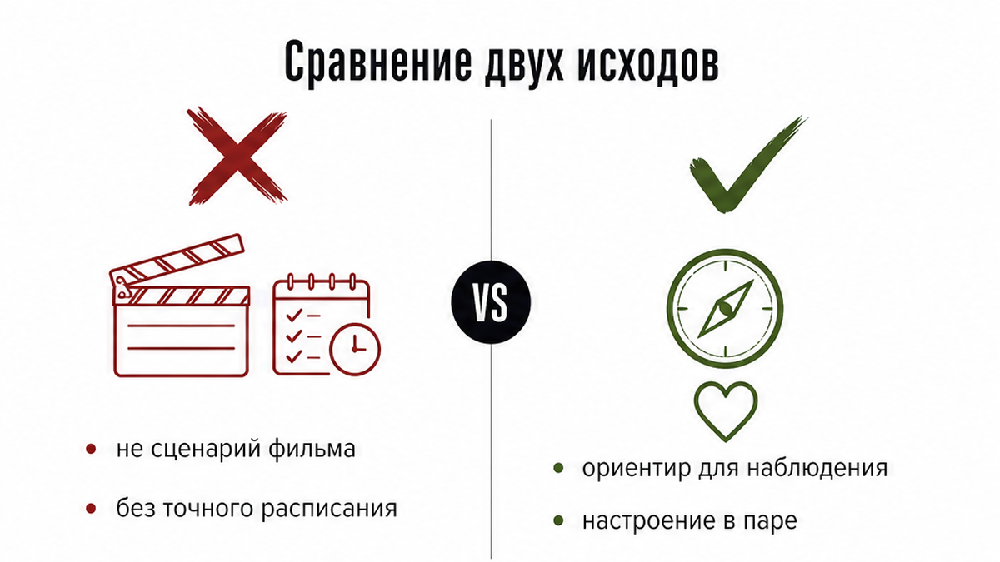
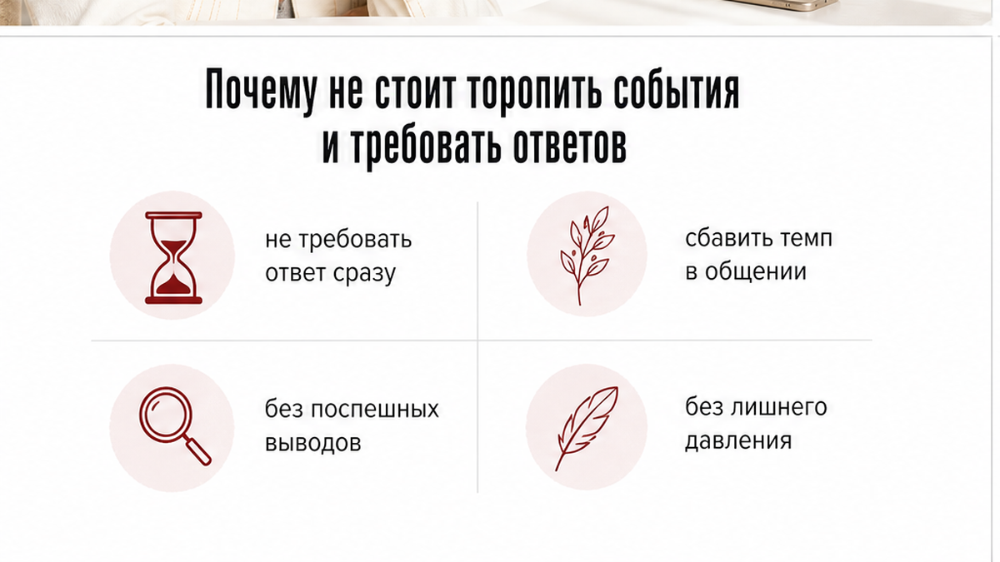
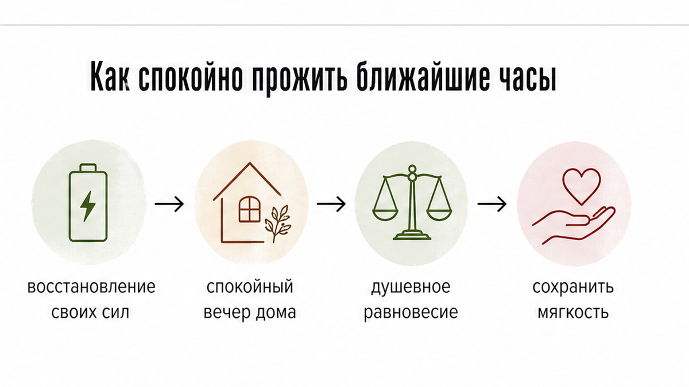

Суббота, за окном темнеет, а телефон лежит экраном вниз возле остывающей кружки. Ты в очередной раз открываешь диалог и смотришь на время последнего захода. Внутри крутится вопрос: напишет ли он сам и чем закончатся эти несколько часов. Рука тянется отправить короткую фразу, но сразу накатывает сомнение, стоит ли торопить события.

Когда нарастает тревога, легко поверить прогнозам, которые обещают расписать вечер поминутно. Ни одна карта не выдает готовый сценарий с обязательным финалом на ночь. Вопрос о ближайших часах нужен для того, чтобы увидеть реальное настроение между вами и снять лишнее напряжение.
Выпавшая карта работает как ориентир для спокойного наблюдения. Она помогает подсветить фоновое состояние отношений, напоминая о праве каждого человека на отдых и личное пространство после тяжелой недели.

В тишине субботнего вечера любая пауза кажется началом проблемы, а неопределенность хочется снять немедленно. Попытка ускорить разговор и вытянуть признания прямо сейчас обычно только усиливает напряжение.
Многие вещи становятся понятнее, если дать ситуации немного времени. Вечер выходного дня создан для того, чтобы сбавить темп, осмыслить события недели и не делать поспешных выводов, пока не открылись все детали.

Вместо бесконечной прокрутки тревожных исходов лучше переключиться на восстановление собственных сил. Спокойный вечер дома или пара часов наедине с собой возвращают душевное равновесие надежнее, чем эмоциональные сообщения на бегу.
Карты таро в такой момент служат инструментом для честной рефлексии. Они подсказывают, где стоит замедлиться, на что обратить внимание и как сохранить мягкость в общении с близким человеком.
Если тебе хочется прояснить динамику вечера и получить понятный ориентир, открой бот в Макс. Там доступны 3 бесплатных расклада на 3 любых вопроса. Запрос можно отправить голосом или текстом, выбрав быстрый триплет из 3 карт или подробный кельтский крест из 10 карт.
Когда нужен глубокий разбор ситуации в паре, открой приложение во ВКонтакте или приложение Макс. Там можно получить подробный аудиоразбор по структуре «Суть – Тень – Вектор», дополнительную карту практического совета и разобрать волнующие детали через уточняющие вопросы.